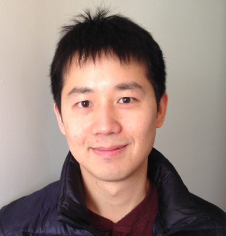
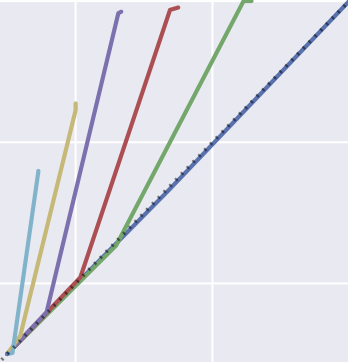
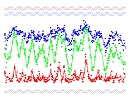

|
I am currently a post-doc with Dr. Patrick Shafto
in the Math & Computer Science Department at Rutgers University–Newark.
My research interest spans the fields circumscribed by four grand key words: human,
machine, learning, and teaching.
Current endeavor includes using Bayesian teaching as a way to explain machine learning models via data,
coming up with unifying models of active learning and instructional pedagogy,
understanding recommender system as iterated learning,
and exploring the representation implication of cooperation in inference.
Prior to this, I was a post-doc with Prof. Daniel Wolpert and Dr. Máté Lengyel in the CBL Lab at the University of Cambridge. There I studied active sensing by tracking human eye movement and quantifying its sensing efficiency with Bayesian active learning. Prior to that, I did my PhD with Prof. John Bechhoefer in the Physics Department at Simon Fraser University. There I modelled the DNA replication as a stochastic process and applied the theory to analyze several types of replication experiment. Contact: scottchenghsinyang[AT]gmail[DOT]com |
 |
Publications
 |
Chi-Ken Lu, Scott Cheng-Hsin Yang, Patrick Shafto (2018) Standing Wave Decomposition Gaussian Process Under Review |
 |
Scott Cheng-Hsin Yang, Yue Yu, Arash Givchi, Pei Wang, Wai Keen Vong, and Patrick Shafto (2018) Optimal Cooperative Inference Proceedings of the 21st international conference on Artificial Intelligence and Statistics |
|
Scott Cheng-Hsin Yang and Patrick Shafto (2017) Explainable Artificial Intelligence via Bayesian Teaching NIPS 2017 workshop on Teaching Machines, Robots, and Humans [poster] |
|
|  |
Scott Cheng-Hsin Yang and Patrick Shafto (2017) Teaching versus active learning: A computational analysis of conditions that affect learning Proceedings of the 39th Annual Conference of the Cognitive Science Society [poster] [code] |
 |
Scott Cheng-Hsin Yang, Jake Alden Whritner, Olfa Nasraoui, and Patrick Shafto (2017) Unifying recommendation and active learning for human-algorithm interactions Proceedings of the 39th Annual Conference of the Cognitive Science Society [slides] |
 |
Scott Cheng-Hsin Yang, Daniel Wolpert, and Máté Lengyel (2016) Theoretical perspectives on active sensing Current Opinions in Behavioural Neuroscience 11:100-108 |
|
Scott Cheng-Hsin Yang, Máté Lengyel, and Daniel Wolpert (2016) Active sensing in the categorization of visual patterns eLife 5:e12215 [powerpoint] [code] |
|
 |
Shankar P. Das, Tyler Borrman, Scott Cheng-Hsin Yang, Victor W. T. Lui, John Bechhoefer, and Nicholas Rhind (2015) Replication timing is regulated by the number of MCMs loaded at origins Genome Research 25:1886-1892 |
 |
Scott Cheng-Hsin Yang (2012) Modelling the DNA replication program in eukaryotes PhD Thesis |
|
Antoine Baker, Benjamin Audit, Scott Cheng-Hsin Yang, John Bechhoefer, and Alain Arneodo (2012) Inferring where and when replication initiates from genome-wide replication timing data Phyiscal Review Letter 108:268101 |
|
|  |
Scott Cheng-Hsin Yang, Nicholas Rhind, and John Bechhoefer (2010) Modeling genome-wide replication kinetics reveals a mechanism for regulation of replication timing Molecular Systems Biology 6:404 [supplementary material] [slides] [code] Rated by Faculty of 1000 Biology as MUST READ [link] |
 |
Nicholas Rhind, Scott Cheng-Hsin Yang, and John Bechhoefer (2010) Reconciling stochastic origin firing with defined replication timing Chromosome Research 18:35 |
|
Scott Cheng-Hsin Yang, Michel Gauthier, and John Bechhoefer (2009) Computational methods to study kinetics of DNA replication Methods in Molecular Biology 521:555-573 |
|
|
Scott Cheng-Hsin Yang and John Bechhoefer (2008) How Xenopus laevis embryos replicate reliably: Investigating the random-completion problem Physical Review E 78:041917 [slides] Selected for a Viewpoint article: Just-in-time DNA replication |
Last modified 2018-03-19